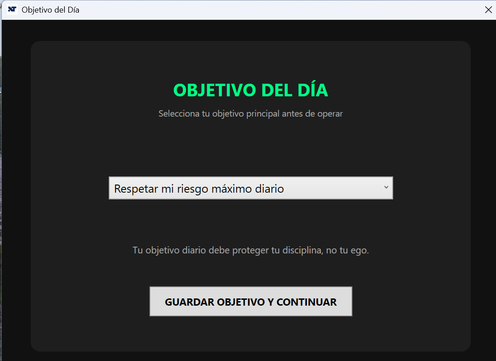
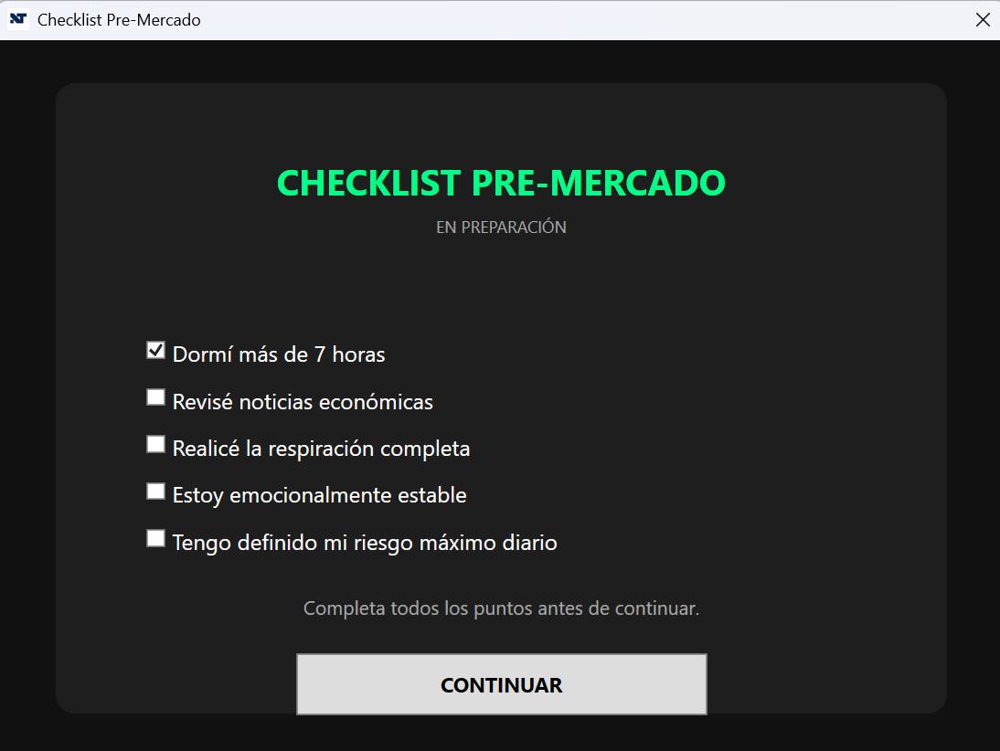
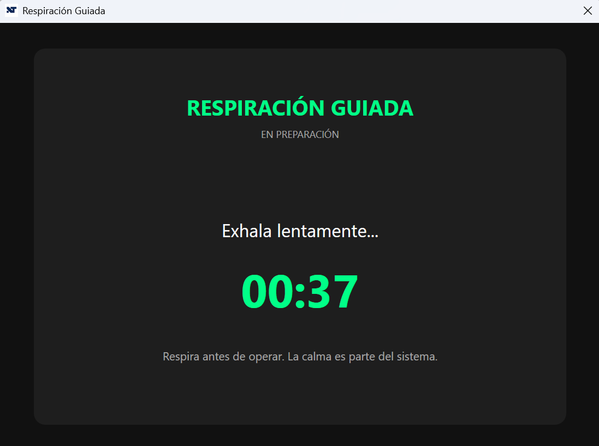
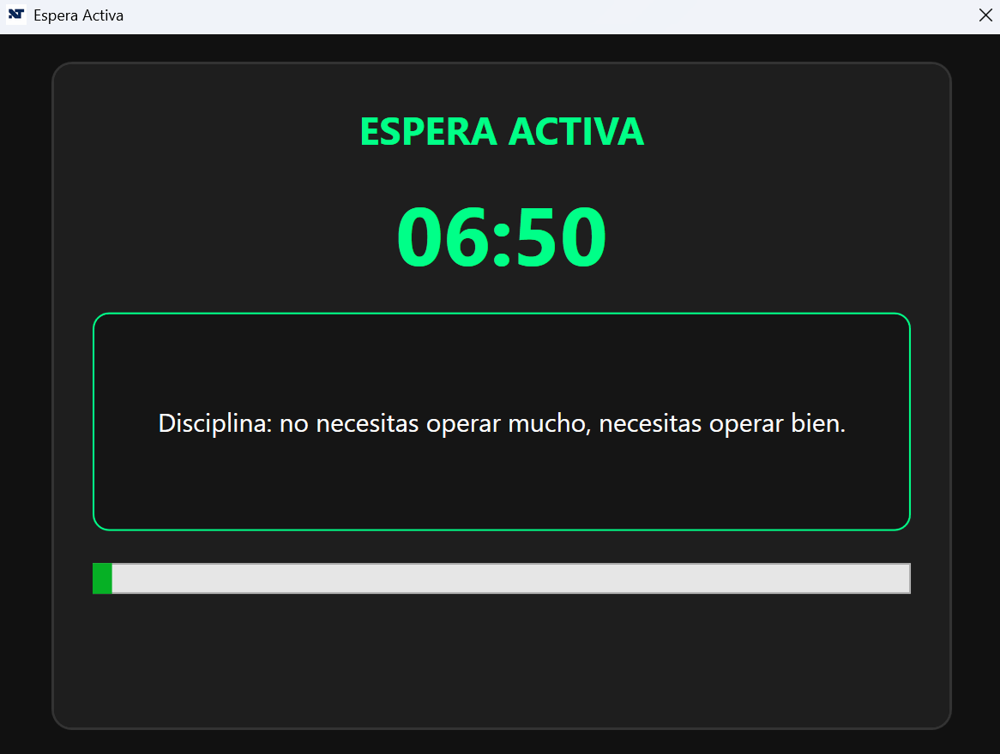
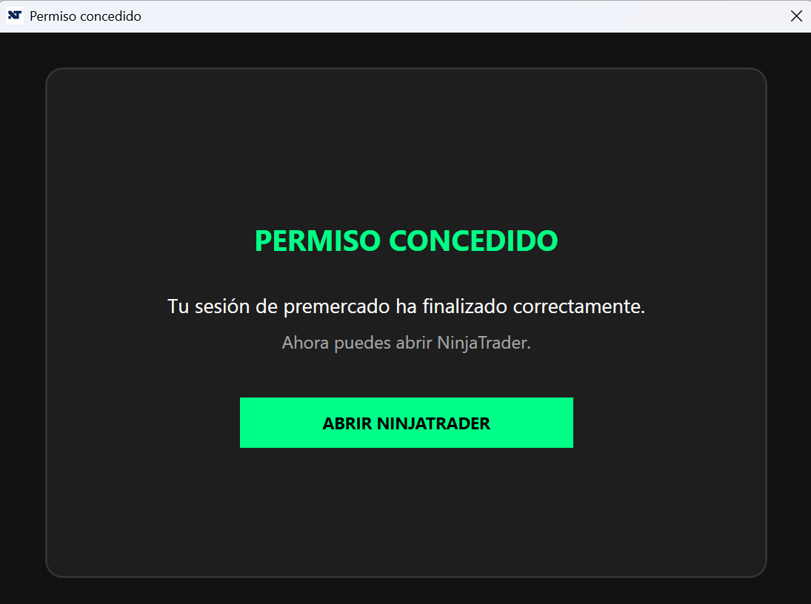

Rompiste tu plan
Una sola mala decisión arruinó el día.
Convierte tu rutina de premercado en un hábito. Reduce la ansiedad, evita operar por impulso y entra al mercado únicamente cuando hayas completado tu preparación.
Muchos traders pierden dinero antes incluso de realizar su primera operación del día. No por falta de estrategia, sino por operar con ansiedad, impulsividad o sin una preparación adecuada.
Una sola mala decisión arruinó el día.
Tu concentración disminuye y aumentan los errores.
Tomaste decisiones impulsivas.
Entraste sin conocer el mercado ni revisar el contexto económico.
Antes de abrir su plataforma de trading, el software te guía por una rutina obligatoria diseñada para ayudarte a operar con mayor claridad, disciplina y control emocional.
Premarket Guardian PRO convierte tu preparación diaria en un proceso guiado para que llegues al mercado tranquilo, enfocado y con un plan claro.
Verifica que estés preparado antes de operar.
Reduce la ansiedad y recupera el control.
Identifica si realmente estás listo para operar.
Sigue siempre el mismo proceso antes del mercado.
Su plataforma de trading solo se abre después de completar la preparación.
Premarket Guardian PRO convierte tu preparación en un proceso claro, repetible y estructurado antes de abrir tu plataforma de trading.
Establece el propósito de tu sesión y recuerda qué tipo de decisiones quieres tomar durante el mercado.
Verifica sueño, estabilidad emocional, preparación y riesgo antes de permitirte continuar.
Realiza una pausa guiada para reducir la ansiedad y volver a concentrarte en tu plan.
Responde preguntas diseñadas para detectar ansiedad, impulsividad, FOMO y deseo de recuperar pérdidas.
Cuando terminas el proceso, Premarket Guardian PRO abre tu plataforma de trading y finaliza la rutina.
Premarket Guardian PRO no intenta enseñarte una estrategia. Te ayuda a ejecutar con disciplina la estrategia que ya tienes.
Una pausa antes de operar cambia la calidad de tus decisiones.
Convierte la preparación en un hábito antes de cada sesión.
Entra al mercado con un propósito claro y un plan definido.
La consistencia comienza antes de hacer tu primera operación.
Premarket Guardian PRO no cambia tu estrategia.
No necesitas perder dinero todos los días. Basta con que dos operaciones por semana ocurran por ansiedad, FOMO, romper tu plan o comenzar la sesión sin una preparación adecuada.
cada semana
cada mes
cada año
por operación
por operación
por operación
Los valores mostrados corresponden a un escenario hipotético e ilustrativo. Los resultados reales dependen de cada operador, su gestión de riesgo y las condiciones del mercado.
Una sola operación impulsiva parece pequeña.
Premarket Guardian PRO permite configurar la ruta de ejecución de una plataforma de trading de escritorio y abrirla únicamente después de completar la rutina de premercado.
La integración actual ha sido validada con NinjaTrader mediante la configuración de la ruta de ejecución del programa.
Estas plataformas serán incorporadas progresivamente después de completar las pruebas de compatibilidad correspondientes.
La compatibilidad depende de que la plataforma tenga un ejecutable de escritorio que pueda configurarse dentro de Premarket Guardian PRO.
Premarket Guardian PRO te guía paso a paso antes de abrir tu plataforma de trading.

Define el propósito de tu sesión antes de operar.

Verifica tu preparación, estado y riesgo.

Haz una pausa para reducir la ansiedad.
Identifica impulsividad, FOMO y deseo de revancha.

Detente antes de entrar al mercado.

Completa la rutina y abre tu plataforma de trading.
Las imágenes corresponden a la versión actual del programa y podrán actualizarse con futuras mejoras de interfaz.
Este software está diseñado para traders que entienden que la disciplina comienza antes de hacer la primera operación.
Ayudar a los traders a tomar mejores decisiones antes de que el mercado tenga la oportunidad de ponerlas a prueba.
Premarket Guardian PRO se encuentra en su etapa inicial de lanzamiento, con una base funcional y nuevas mejoras planificadas.
Rutina guiada, sistema de activación y apertura controlada de la plataforma de trading.
Activación personalizada y administración centralizada de licencias.
Rediseño visual completo con una experiencia más moderna, clara y profesional.
Validación progresiva con nuevas plataformas de trading de escritorio.
Sin suscripciones mensuales, sin renovaciones automáticas y sin costos ocultos.
Licencia personal de por vida vinculada a un único equipo mediante Machine ID.
Una sola operación impulsiva puede costar más que esta inversión.
Todo lo que necesitas saber antes de adquirir Premarket Guardian PRO.
Sí. Realizas un único pago de 45 USD y recibes una licencia permanente vinculada al Machine ID de un equipo.
No. Cada licencia es personal y queda asociada a un único equipo mediante su Machine ID.
Deberás comunicarte con soporte para revisar el cambio de equipo y el proceso correspondiente de reactivación.
La versión actual ha sido probada con NinjaTrader. Se realizarán validaciones progresivas con otras plataformas de trading de escritorio.
No. El programa no genera señales, recomendaciones de inversión ni estrategias. Su función es guiarte por una rutina de preparación antes de operar.
No. Premarket Guardian PRO no garantiza resultados financieros. Su objetivo es ayudarte a mejorar tu preparación, disciplina y control antes de operar.
Después de realizar el pago, recibirás las instrucciones para solicitar tu licencia al correo de soporte. Una vez verificada la compra, se enviará la licencia personalizada.
Puedes escribir a soporte@premarketguardian.com.
Premarket Guardian PRO — Licencia de por vida para un computador.